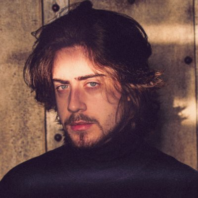

Rafael Lange Severino, Diretor Criativo
Produtor de jogos, escritor, youtuber, streamer

Biografia de Rafael Lange
Cellbit nasceu em Florianópolis, Santa Catarina no dia 11 de fevereiro de 1997 e cresceu em Carazinho, no Rio Grande do Sul. Ele tem dois irmãos, Henrique e Felipe. Seu amor por jogos de puzzle e enigmas começou aos 9 anos de idade, quando seu irmão mais velho, Henrique, o apresentou o site Notpron (estilizado como notpr0n), conhecido como "o enigma mais difícil da internet". Henrique e Rafael, em menos de um ano, conseguiram passar de 139 dos 140 níveis que havia na época, ficando 6 anos no último nível. Num vídeo em que respondia perguntas, Lange afirmou que não gostava de falar sobre sua vida pessoal publicamente, porque achava desnecessário e preferia focar apenas em suas criações.Linha do tempo
2012-2013 Com 15 anos, Lange começou a fazer vídeos para seu segundo canal no YouTube CellBits (posteriormente mudado para Cellbit).
Em 2012, Cellbit começou a fazer vídeos no estilo de "filminhos" de Minecraft. Depois, planejava criar um canal focado no jogo Portal 2.
Um tempo mais tarde, voltou a gravar vídeos de Minecraft, porém com outro formato. Seu trabalho se deu principalmente ao fato de Lange vir de uma família pobre,
em que sua mãe estaria passando por momentos complicados não podendo trabalhar.
2014-2015 Em 2014, Lange começou a fazer vídeos frequentes do jogo Garry's Mod. Mais tarde, teria parado de fazer conteúdo do jogo e gravava apenas jogos aleatórios, com algumas "Sagas", como Fugindo da Escola e a série de vídeos do jogo em flash Gênio Quiz.
Neste período, Cellbit ficou conhecido pela sua risada alta e gritos estridentes, que muitos alegavam serem forçados da parte do criador. Lange respondeu aos questionamentos afirmando que, de fato, em alguns momentos forçava a risada para momentos não tão engraçados serem mais engraçados para o vídeo (com o propósito de entreter), mas que suas risadas genuínas eram altas naturalmente.
2016 Com 18 anos, Lange fez sua primeira tatuagem para simbolizar sua independência e se mudou de Carazinho para São Paulo.
Nesta época, ele mudou bruscamente seu estilo de vídeo, deixando de lado as gameplays e dando atenção a temas mais sérios.
Em julho de 2016, postou um vídeo de crítica a comunidade do Minecraft no Brasil, que viralizou rapidamente e fez Lange tomar o apelido de "juiz do YouTube" por alguns meses.
Em um vídeo intitulado "CELLBIT ESTÁ FICANDO LOUCO", Rafael revelou ter transtorno de ansiedade.
2017 Em fevereiro, Lange atuou em Internet - O Filme como "Paulinho", um jogador profissional de Street Fighter que se disfarça de youtuber.
Em julho de 2017, Lange postou seu primeiro vídeo da série "NÃO ACREDITE NAS MENTIRAS DELE", um jogo de enigmas que foi descontinuado em 2018.
O jogo contava uma história e não fora completado por ninguém.
A série fez de Lange ser conhecido como "o cara dos enigmas".
2018-presente Em 2018, Lange ingressou na plataforma Twitch, onde começou a fazer livestreams recorrentes, "abandonando" o YouTube. Lange se tornou um dos criadores mais conhecidos da Twitch Brasil, contando com mais de 2,2 milhões de seguidores no site.
Em fevereiro de 2020, Lange deu início a sua primeira campanha de RPG chamada "Ordem Paranormal RPG". Em abril do mesmo ano, fez sua segunda campanha intitulada "O Segredo na Floresta RPG".
Em outubro de 2020, Lange anunciou sua campanha para a terceira temporada de RPGs de Ordem Paranormal, com o nome "Desconjuração" e, juntamente, uma campanha de financiamento do jogo Ordem Paranormal: Enigma do Medo em parceria com a desenvolvedora de jogos indie Dumativa. A meta para o início da produção do jogo era de 500 mil reais em 60 dias. O objetivo foi alcançado 5 horas depois da abertura do financiamento no site Catarse. A campanha chegou ao seu fim com 846% da meta alcançada e mais de R$ 4 milhões acumulados.
Em setembro de 2021, Cellbit anunciou a 4ª temporada de seu RPG, chamada "Calamidade". Em novembro do mesmo ano, Cellbit anunciou a pré-venda do seu primeiro livro intitulado "Livro de Regras - Ordem Paranormal RPG".
Em junho de 2022, Lange anunciou três novas temporadas spin-off de RPGs de Ordem Paranormal, sendo a primeira delas intitulada de "O Segredo na Ilha" e iniciada na semana seguinte de seu anúncio. Além disso, anunciou a produção da primeira graphic novel de sua campanha de RPG, recontando a história da primeira temporada de Ordem Paranormal.
Em outubro de 2022, iniciou a 2ª temporada spin-off de Ordem Paranormal, nomeada de "Sinais do Outro Lado".
Se quiser saber mais sobre Rafael Lange, Clique Aqui